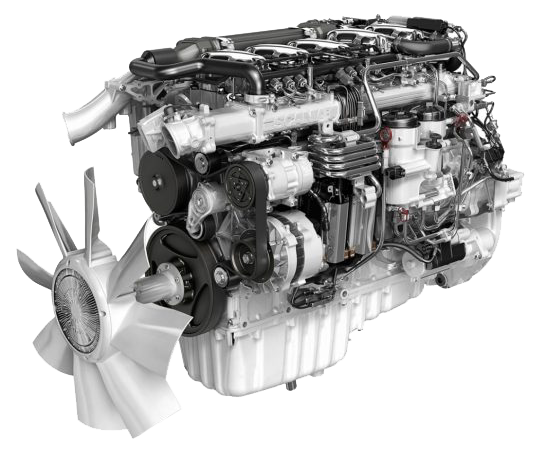
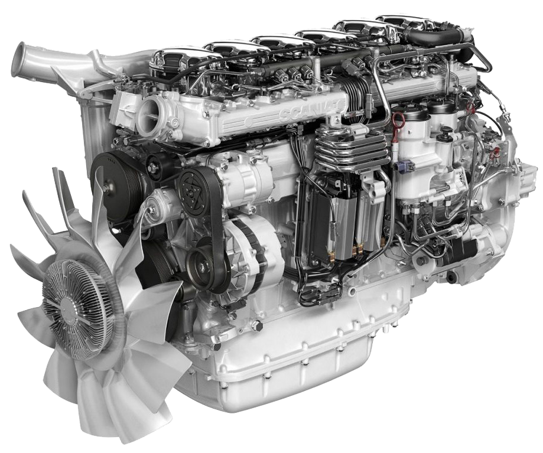

SÉRIE P
A série P da Scania é muito útil, pois a entrada da cabine será baixa com alças que vão facilitar a entrada e saída; o motorista fica sentado em uma colocação privilegiada, e sendo assim terá uma boa visão do trânsito em sua frente.
Essa série tem uma cabine de trabalho premium, que tem fácil acesso, tem uma vasta opção de armazenamento e existe a possibilidade de descanso. Tanto a cabine quando a suspensão dela foram reprojetadas, sendo assim reduzindo as vibrações e assim se cria um ambiente de direção silenciosa.
Todas os motores dessa série de caminhões apresenta a eficácia tecnológica SCR da Scania que vai reduzir impactos ambientais e o consumo de combustível sem comprometer a residência. A linha de novos motores são mais leves, o que se torna mais perfeitos para ambientes urbanos. O motor de 7 litros é uma opção muito favorável para trafico intenso.
Perfeita para o seu negócio
Com os novos caminhões da linha P, você tem uma cabine de pouco peso que oferece grande visibilidade, dirigibilidade e bom balanceamento para atender às suas necessidades. P é nossa linha de cabines mais versátil, ideal para operações urbanas e regionais, também já testada na construção e em outras condições mais exigentes.
Projetada para a cidade
A nova linha P foi desenvolvida para o trabalho diário, ideal para os centros urbanos. Com ótimos recursos internos e externos, podemos customizar seu caminhão para atender às necessidades da sua operação.
"Estamos desenvolvendo soluções para garantir que as empresas que atuam nas maiores cidades do mundo sejam capazes de lidar com os desafios que enfrentam."
HENRIK ENG - DIRETOR DE PRODUTO URBANO, CAMINHÕES, SCANIA
A ENTREGA PERFEITA
A série P se destaca nas ruas agitadas da cidade e nos movimentados locais de construção. Nossos poderosos caminhões, eficientes no consumo de combustível, são lendários. Todas as linhas de motores de 7, 9, 13 e 16 litros contam com tecnologia SCR exclusiva, o que reduz o impacto ambiental e o consumo de combustível sem comprometer a potência. O conjunto de engrenagens é mais suave e mais rápido que nunca.
EURO 5
Motores de 7 litros
Cada operação de transporte tem seus desafios e necessidades exclusivos em termos de potência. Por isso a Scania desenvolveu o motor de 7 litros. É a opção perfeita para clientes que operam com pesos brutos mais baixos, mas com a necessidade de uma alta carga útil. O motor de 7 litros tem um consumo fantástico de combustível, especialmente em operações urbanas. Uma comparação com o motor de 9 litros existente mostra uma redução de quase 10.
FORÇA BRUTA
Nosso motor de 9 litros está disponível com 280, 320, 340 e 360 hp, dependendo do combustível de sua escolha. Além disso, ele oferece uma redução significativa no peso em comparação com o motor de 13 litros, permitindo que você aumente um pouco mais a carga útil sem comprometer o desempenho.

PROJETADOS PERFEITAMENTE
O fantástico motor de 13 litros, propriamente dito, oferece uma economia incrível de combustível de 7% a 8%. O motor de 13 litros e 540 cv totalmente novo. Esse novo motor é o mais potente motor de 6 cilindros em linha que a Scania já desenvolveu. Com 540 cv e 2.700 Nm, é um motor típico da Scania, fiel à nossa filosofia de baixa rotação e alto torque.

O LENDÁRIO V8
Nosso lendário motor V8 foi melhorado ainda mais, tornando-o mais leve, potente, robusto e eficiente. O novo V8 tem muito mais potência. O torque vem em rotações mais baixas, o que torna possível especificar uma relação do eixo traseiro mais rápida e operar em rotações mais baixas do motor, o que, naturalmente, economiza combustível. Tudo isso, é claro, sem comprometer a dirigibilidade ou a capacidade de partida.